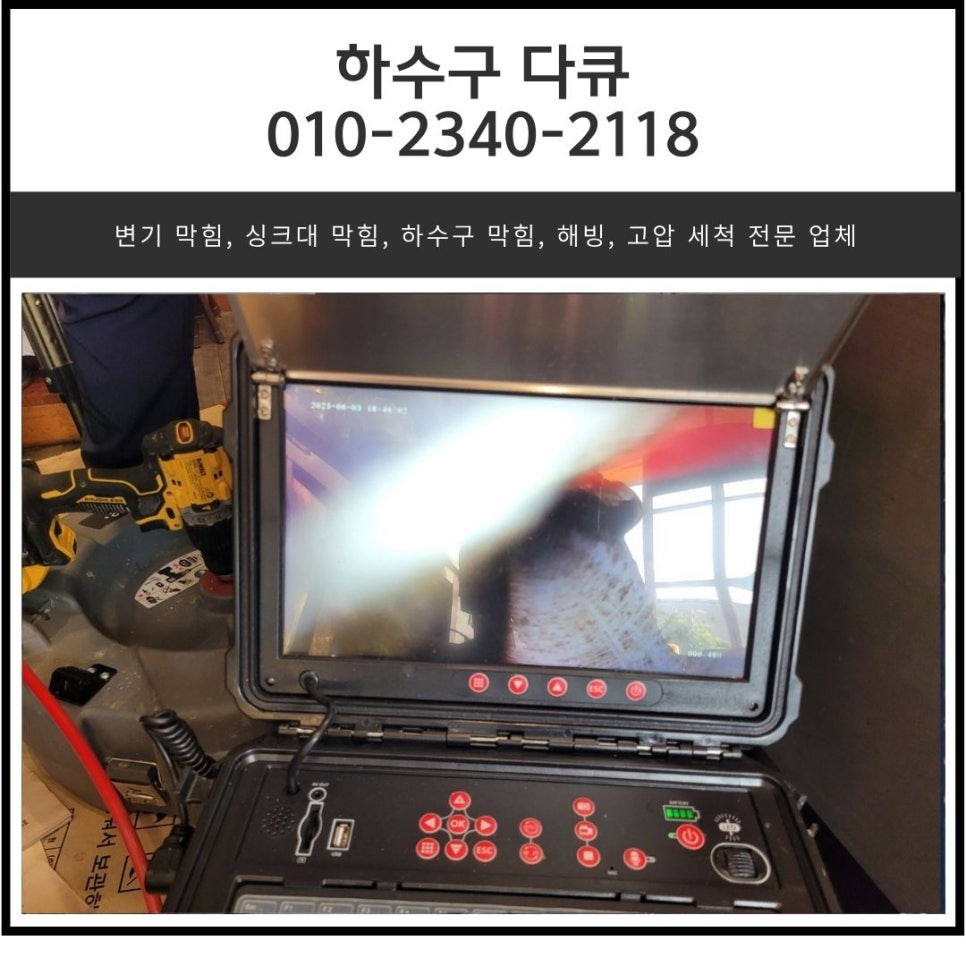
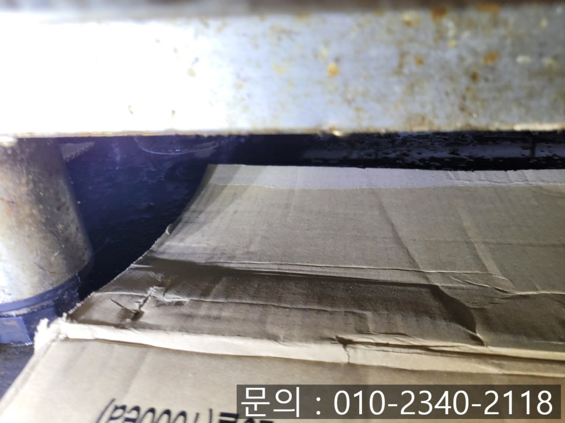
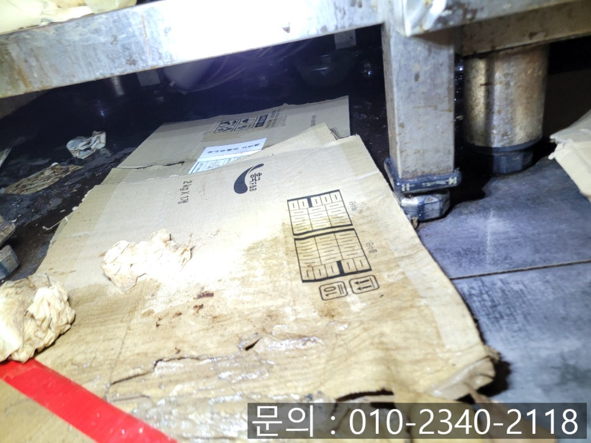
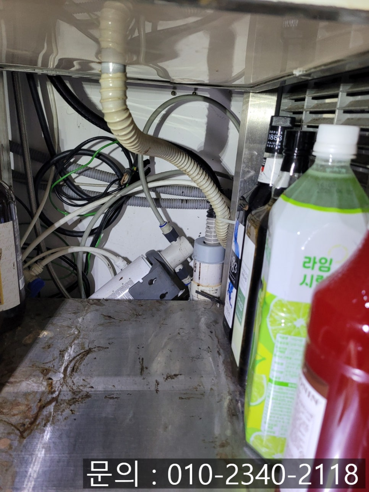
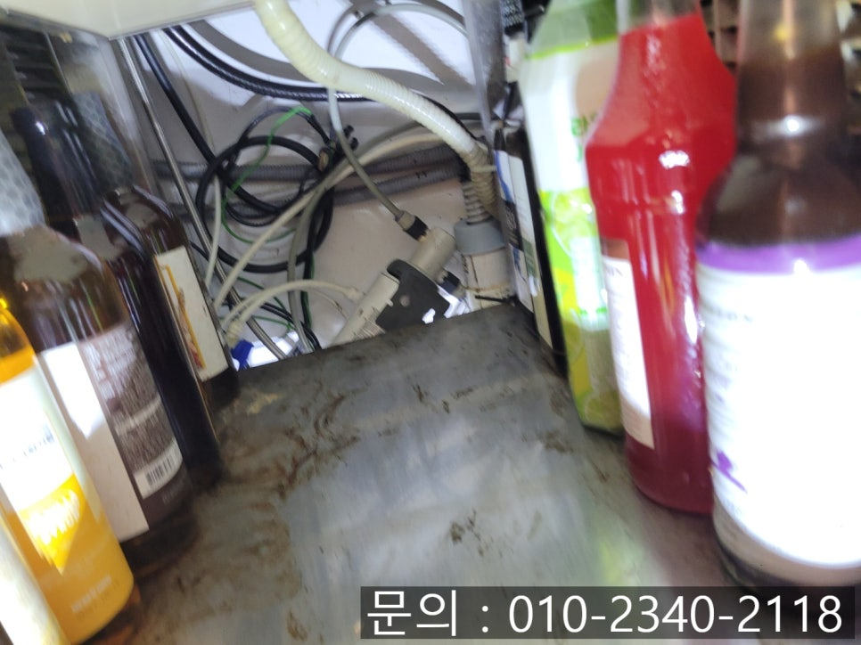
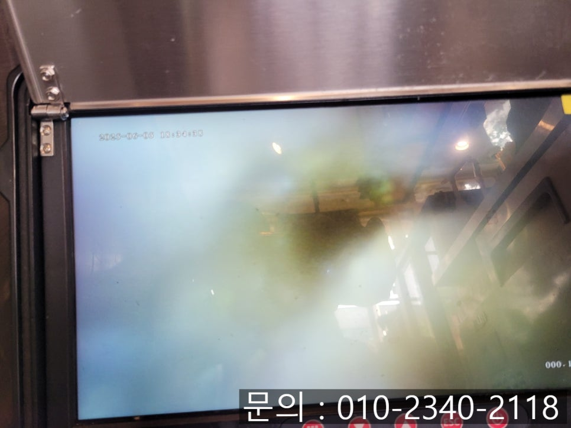
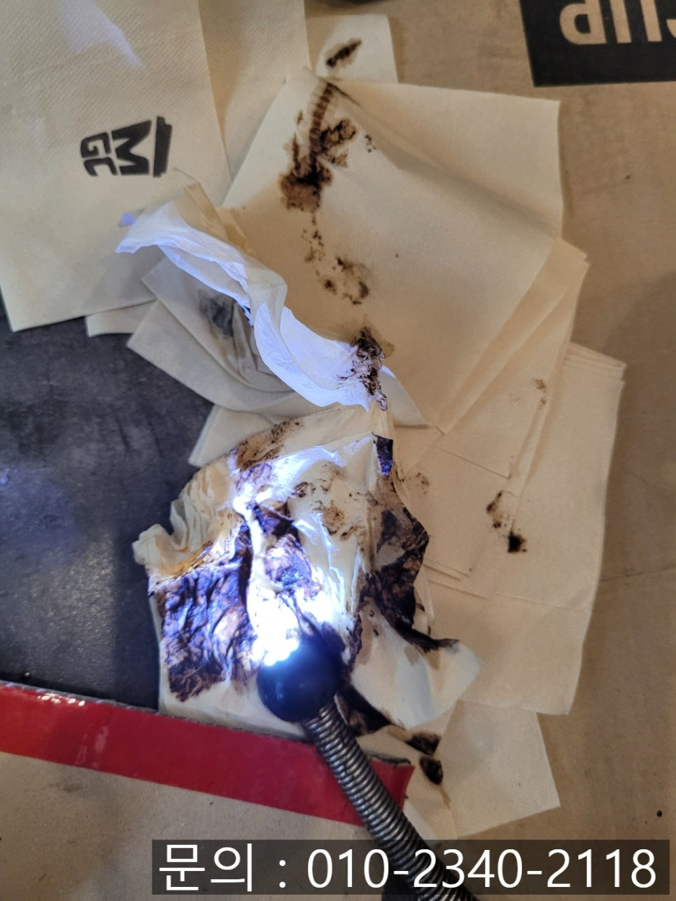

🏠 동백동 싱크대 막힘 용인 기흥구 중동 커피 전문점 매장 하수구 역류 뚫는 업체
용인 기흥 싱크대막힘 전문 시공 후기

📋 작업 개요
- 위치: 용인 기흥, 기흥, 용인
- 서비스 유형: 싱크대막힘, 하수구막힘, 배관막힘, 역류해결, 뚫는업체, 배관청소, 고압세척
- 작업 일시: 2025. 6. 10. 16:33
- 업체명: 하수구수사대 (010-5615-2118)
🔍 문제 상황
안녕하세요.
동백동 싱크대 막힘, 용인 기흥구 중동 커피 전문점 매장 하수구 역류 뚫는 업체 하수구 다큐입니다.
한국은 커피 소비량이 매우 높은 나라로 성인 1인당 연간 커피 소비량이 약 350잔 이상으로 세계 평균을 훨씬 웃돕니다.
그러다 보니 약 8만~9만 개의 커피 전문점이 영업을 하고 있는데요.
커피 전문점의 경우 물 사용이 많아 동백동 싱크대 막힘이 자주 발생할 수밖에 없습니다.
커피를 만들고 컵을 세척하며, 각종 조리도구를 닦는 과정에서 커피 찌꺼기를 포함한 각종 이물질이 배관으로 흘러 들어가기 때문이에요.
이렇게 이물질이 배관 내부에 조금씩 쌓이게 되면 물이 흘러내려 가는 속도가 느려지고, 결국엔 물이 역류하는 심각한 문제가 발생하게 됩니다.

🔎 원인 분석
💡 전문가 진단: 정밀 진단 장비를 사용하여 슬러지의 고착 여부를 판명하고 타격/세척 작업을 실시했습니다.
커피 전문 매장의 경우 주방의 위생상태가 서비스 품질과 직결되는 공간이다 보니 더욱 신경 써서 관리해야 하는 공간인데요.
오늘은 동백동 싱크대 막힘으로 다녀온 현장을 소개해 드리겠습니다.
토요일 오전 이른 시간에 고객님으로부터 한 통의 전화를 받았습니다.
단체 주문이 있어 음료를 만들어야 하는데 싱크대 쪽에서 검은색 물이 넘쳐 역류한다는 것이었어요.
아침 이른 시간부터 많이 당황하셨을 고객님을 위해 신속하게 장비를 챙겨 30분 만에 현장으로 달려갔습니다.
이미 싱크대 아래쪽을 살펴보니 박스가 역류한 물로 인해 젖어 있는 상태였어요.
용인 기흥구 중동 커피 전문점 매장 하수구 역류 뚫는 업체 하수구 다큐는 내시경 카메라를 배관 내부로 진입시켜 하수구 역류의 근본적인 원인을 파악해 보기로 했습니다.
내시경 카메라가 배관 내부로 들어가자 이물질로 인해 입구까지 차올라 빠지지 못하고 고여 막혀있는 상태였습니다.

🔧 작업 과정
내시경 카메라가 배관 내부로 잠깐 들어갔다 나오기만 했을 뿐인데 시커먼 이물질이 잔뜩 묻어 나오는 걸 어렵지 않게 확인할 수 있었어요.
아무래도 새카만 이물질은 커피 때문이겠죠?
용인 기흥구 중동 커피 전문점 하수구 역류를 해결하기 위해 선택한 방법은 플렉스 샤프트를 사용해 배관 내부를 막고 있는 이물질을 제거하는 방법입니다.
리지드 플렉스 샤프트는 내시경 카메라와 함께 사용이 가능한 장비로 최대 2000~3000rpm으로 회전하면서 배관 벽에 달라붙어 있는 이물질을 빠르게 제거하는 역할을 합니다.
고무로 된 외부 피복이 있어 배관의 내부를 손상시키지 않고, 곡선 배관에 쌓인 이물질도 무리 없이 제거해 주는 역할을 하는 장비로 싱크대 배관에 쌓인 이물질을 제거하는 데는 탁월한 장비에요.
내시경 카메라를 이용해 꼼꼼하게 이물질의 위치를 파악하며 청소를 진행하자 통수가 시작되면서 배관이 제 모습을 드러내기 시작합니다.
하지만 잔여 이물질이 여전히 남아있어 내시경 카메라로 확인해가며 청소를 계속 진행했어요.
여러 차례 플렉스 샤프트 장비로 반복해서 작업을 진행하자 모든 이물질이 제거되고 깨끗해진 배관 내부를 확인할 수 있었습니다.
마지막으로 많은 양의 물을 10분 이상 흘려보내면서 막힘이나 역류가 발생하지 않는지 꼼꼼하게 테스트도 진행해 드리고 작업을 마무리할 수 있었어요.
작업을 마친 시간이 오전 8시였는데요!
이른 시간이지만 신속하게 기흥구 중동 하수구 역류 뚫어줘서 고맙다고 커피까지 한잔 만들어주셔서 기분 좋게 하루를 시작할 수 있었습니다.
지금 싱크대, 하수구 막힘으로 고민하고 계시나요?


✅ 작업 완료
1년 365일 언제든 연락 주세요.
확실하게 뚫어드리겠습니다!!!
경기도 용인시 기흥구 동백중앙로 191 8층 c8736호




⚠️ 주방 싱크대 배관 막힘 예방 수칙
- ✅ 기름기가 묻은 식기나 프라이팬은 설거지 전 키친타올로 반드시 기름때를 닦아내세요.
- ✅ 주기적으로 싱크대 개수대에 뜨거운 물을 가득 받아 한 번에 내려 배관 내부 기름을 씻어내세요.
- ✅ 배수구 거름망을 미세한 필터로 사용하시고 음식물 찌꺼기가 틈으로 새어 들지 않게 관리하세요.
- ✅ 베이킹소다와 식초를 뜨거운 물과 함께 일주일에 한 번씩 부어주면 배관 살균과 막힘 예방에 좋습니다.
💡 핵심 정리
- 확실한 장비 작업(내시경 점검 및 샤프트 스케일링)으로 원인을 뿌리 뽑습니다.
- 작업 후 1년 이내에 동일한 부위 재발 시 100% 무상 A/S 서비스를 보장합니다.
- 서울 · 경기 · 인천 전 지역에 24시간 언제든 긴급 출동할 수 있도록 항시 대기 중입니다.
❓ 자주 묻는 질문 (FAQ)
🚨 용인 기흥 싱크대막힘 문제로 고민이신가요?
정확한 원인 진단과 확실한 시공으로 재발 없는 해결을 약속드립니다.
24시간 긴급 출동 | 서울 · 경기 · 인천 전지역 | 1년 내 재발 시 무상 A/S